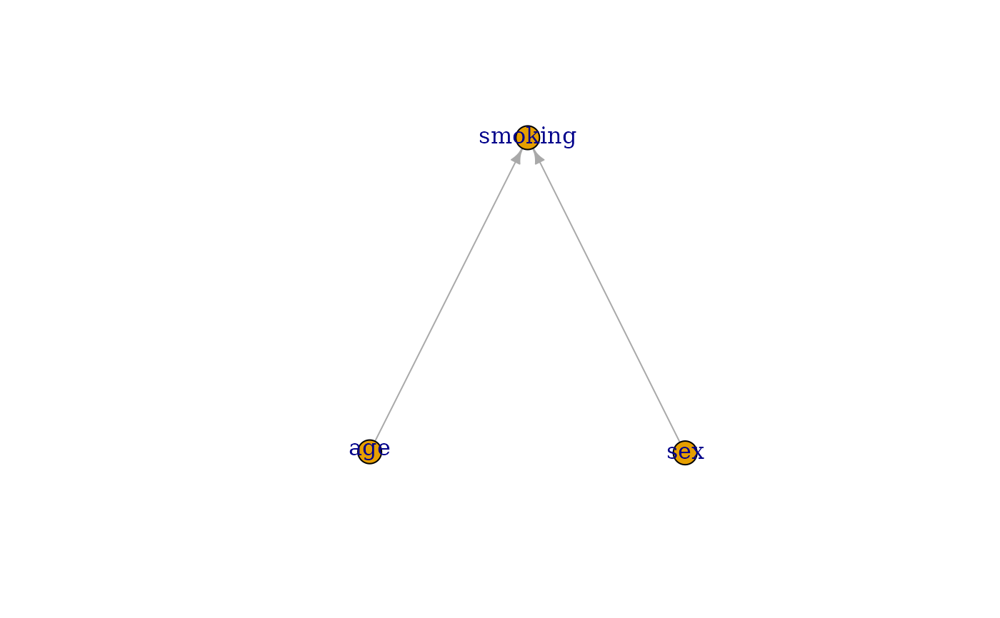
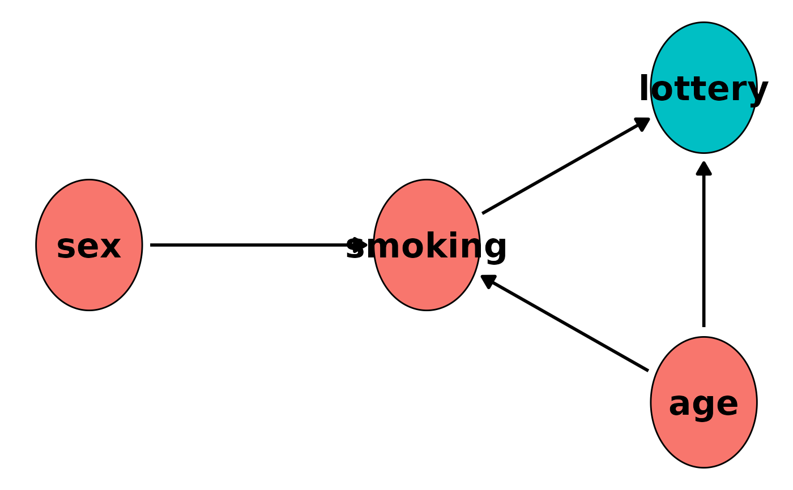
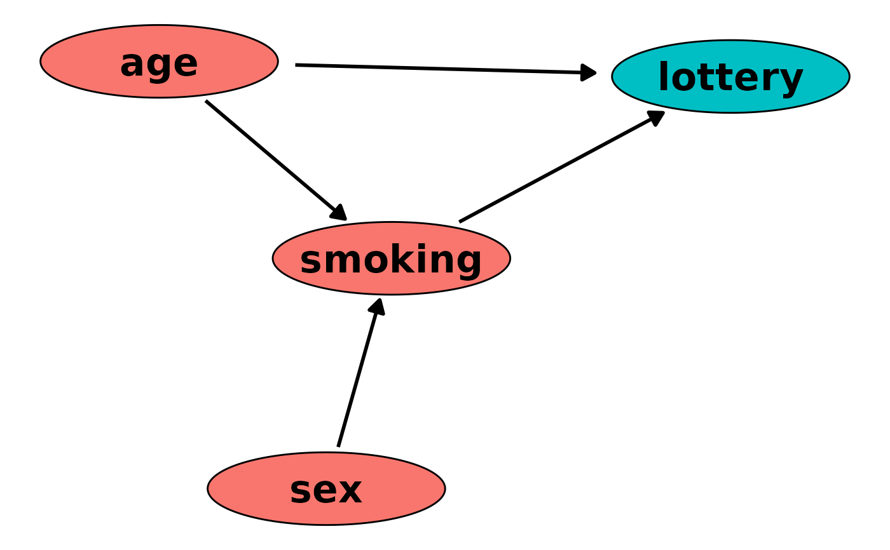

Plot a DAG object
plot.DAG.RdUsing the node information contained in the DAG object this function plots the corresponding DAG in a quick and convenient way. Some options to customize the plot are available, but it may be advisable to use other packages made explicitly to visualize DAGs instead if those do not meet the users needs.
Usage
# S3 method for DAG
plot(x, layout="nicely", node_size=0.2,
node_names=NULL, node_color="black",
node_fill="red", node_linewidth=0.5,
node_linetype="solid", node_alpha=1,
node_text_color="black", node_text_alpha=1,
node_text_size=8, node_text_family="sans",
node_text_fontface="bold", arrow_color="black",
arrow_linetype="solid", arrow_linewidth=1,
arrow_alpha=1, arrow_head_size=0.3,
arrow_head_unit="cm", arrow_type="closed",
arrow_node_dist=0.03, gg_theme=ggplot2::theme_void(),
include_td_nodes=TRUE, mark_td_nodes=TRUE,
...)Arguments
- x
A
DAGobject created using theempty_dagfunction with nodes added to it using the+syntax. Seeempty_dagornodefor more details. Currently does not support DAGs with time-dependent nodes added using thenode_tdfunction.- layout
A single character string specifying the layout of the plot. This internally calls the
layout_function of the igraph package, which offers a great variety of ways to layout the nodes of a graph. Defaults to"nicely". Some other options are:"as_star","as_tree","in_circle","on_spere","randomly"and many more. For more details see?layout_.- node_size
Either a single positive number or a numeric vector with one entry per node in the DAG, specifying the radius of the circles used to draw the nodes. If a single number is supplied, all nodes will be the same size (default).
- node_names
A character vector with one entry for each node in the DAG specifying names that should be used for in the nodes or
NULL(default). IfNULL, the node names that were set during the creation of the DAG object will be used as names.- node_color
A single character string specifying the color of the outline of the node circles.
- node_fill
A single character string specifying the color with which the nodes are filled. Ignored if time-varying nodes are present and both
include_td_nodesandmark_td_nodesare set toTRUE.- node_linewidth
A single number specifying the width of the outline of the node circles.
- node_linetype
A single character string specifying the linetype of the outline of the node circles.
- node_alpha
A single number between 0 and 1 specifying the transparency level of the nodes.
- node_text_color
A single character string specifying the color of the text inside the node circles.
- node_text_alpha
A single number between 0 and 1 specifying the transparency level of the text inside the node circles.
- node_text_size
A single number specifying the size of the text inside of the node circles.
- node_text_family
A single character string specifying the family of the text inside the node circles.
- node_text_fontface
A single character string specifying the fontface of the text inside the node circles.
- arrow_color
A single character string specifying the color of the arrows between the nodes.
- arrow_linetype
A single character string specifying the linetype of the arrows.
- arrow_linewidth
A single number specifying the width of the arrows.
- arrow_alpha
A single number between 0 and 1 specifying the transparency level of the arrows.
- arrow_head_size
A single number specifying the size of the arrow heads. The unit for this size parameter can be changed using the
arrow_head_unitargument.- arrow_head_unit
A single character string specifying the unit of the
arrow_head_sizeargument.- arrow_type
Either
"open"or"closed", which controls the type of head the arrows should have. See?arrow.- arrow_node_dist
A single positive number specifying the distance between nodes and the arrows. By setting this to values greater than 0 the arrows will not touch the node circles, leaving a bit of space instead.
- gg_theme
A
ggplot2theme. By default this is set totheme_void, to get rid off everything but the plotted nodes (e.g. everything about the axis and the background). Might be useful to change this to something else when searching for good parameters of the number arguments of this function.- include_td_nodes
Whether to include time-varying nodes added to the
dagusing thenode_tdfunction or not. If one node is both specified as a time-fixed and time-varying node, it's parents in both calls will be pooled and it will be considered a time-varying node if this argument isTRUE. It will, however, also show up if it's argument isFALSE. In this case however, only the parents of that node in the standardnodecall will be considered.- mark_td_nodes
Whether to distinguish time-varying and time-fixed nodes by
fillcolor. IfTRUE, the color will be set automatically using the standardggplot2palette, ignoring the color specified innode_fill. Ignored ifinclude_td_nodes=FALSEor if there are no time-varying variables.- ...
Currently not used.
Details
This function uses the igraph package to find a suitable layout for the plot and then uses the ggplot2 package in conjunction with the geom_circle function of the ggforce package to plot the directed acyclic graph defined by a DAG object. Since it returns a ggplot object, the user may use any standard ggplot2 syntax to augment the plot or to save it using the ggsave function.
Note that there are multiple great packages specifically designed to plot directed acyclic graphs, such as the igraph package. This function is not meant to be a competitor to those packages. The functionality offered here is rather limited. It is designed to produce decent plots for small DAGs which are easy to create. If this function is not enough to create an adequate plot, users can use the dag2matrix function to obtain an adjacency matrix from the DAG object and directly use this matrix and the igraph package (or similar ones) to get much better plots.
If the DAG supplied to this function contains time-varying variables, the resulting plot may contain cycles or even bi-directional arrows, depending on the DAG. The reason for that is, that the time-dimension is not shown in the plot. Note also that even though, technically, every time-varying node has itself as a parent, no arrows showing this dependence will be added to the plot.
Examples
library(simDAG)
library(ggplot2)
library(igraph)
#>
#> Attaching package: ‘igraph’
#> The following objects are masked from ‘package:stats’:
#>
#> decompose, spectrum
#> The following object is masked from ‘package:base’:
#>
#> union
library(ggforce)
# 2 root nodes, 1 child node
dag <- empty_dag() +
node("age", type="rnorm", mean=50, sd=4) +
node("sex", type="rbernoulli", p=0.5) +
node("smoking", type="binomial", parents=c("sex", "age"), betas=c(1.1, 0.4),
intercept=-2)
plot(dag)

# get plot using igraph
adj_mat <- dag2matrix(dag)
g1 <- igraph::graph.adjacency(adjmatrix=adj_mat, mode="directed")
plot(g1)

# plot with a time-varying node
dag <- dag +
node_td("lottery", type="time_to_event", parents=c("age", "smoking"))
plot(dag)
